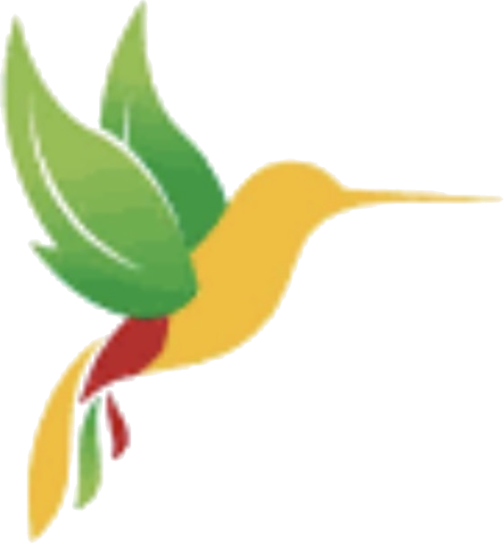
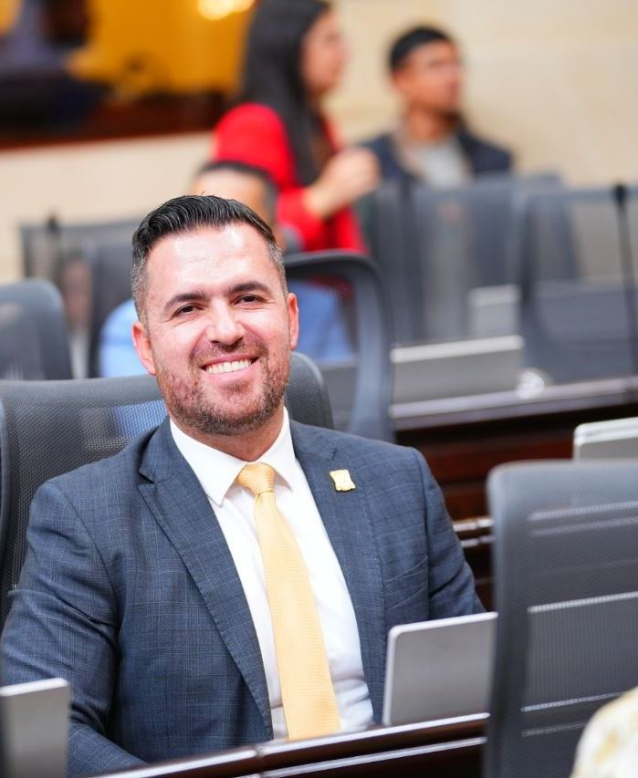
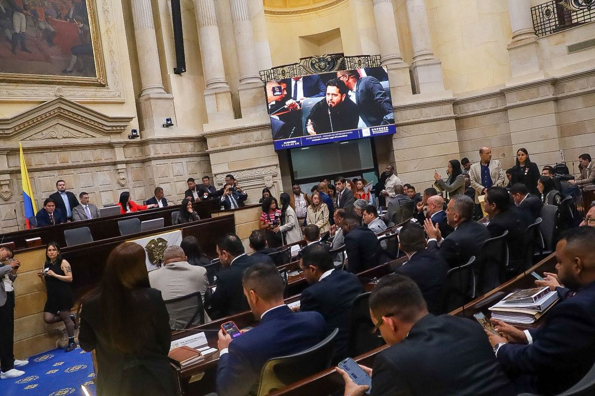
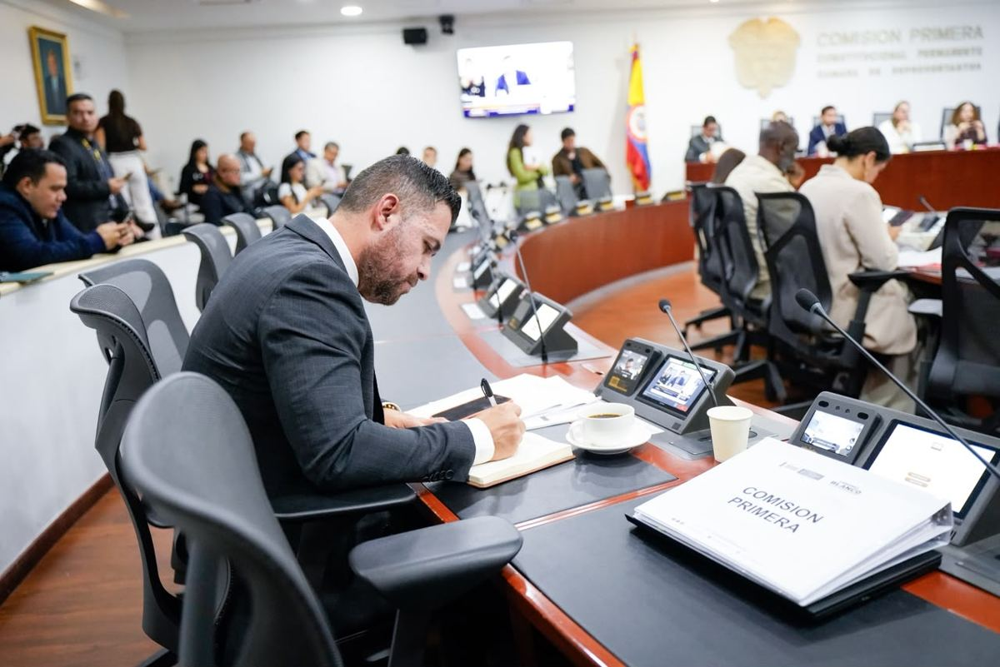
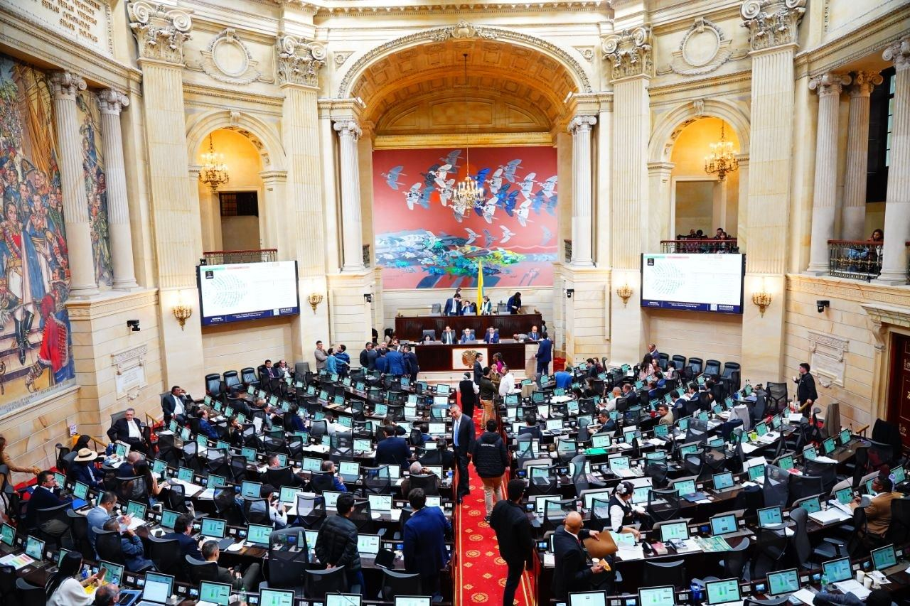

Representante a la Cámara por Caldas · 2026–2030
Representante a la Cámara por Caldas · 2026–2030
Manuel
Correa
Que las regiones vuelvan a ser prioridad en el Congreso.



una sola voz
- 8proyectos radicados
- 5 comisionesPrimera, Afro, Víctimas, terremoto y Pro Fuerza Pública
- +20 añosen la vida pública de Caldas
- 36.269 votossegunda votación de Caldas en 2026

De Manizales al Congreso
Abogado de la Universidad de Caldas y magíster en Derecho con énfasis en Derecho Administrativo de la Universidad Externado de Colombia. Su vida pública empezó en la Junta de Acción Comunal del barrio La Enea, en Manizales.
Fue edil de la Comuna Tesorito y concejal de Manizales durante dos periodos consecutivos, con énfasis en planeación urbana, control político, educación pública y apoyo a los sectores productivos. Luego fue diputado a la Asamblea de Caldas, candidato a la Gobernación y presidente del movimiento Gente en Movimiento. Después fue secretario privado de la Gobernación, cargo que dejó para aspirar a la Cámara. En 2026 Caldas lo eligió como su representante con la segunda votación del departamento.
Su trabajo legislativo tiene un hilo conductor: que las decisiones de Bogotá lleguen a los territorios. Por eso su agenda mezcla patrimonio, ambiente, innovación y la reconstrucción tras el sismo de 2026.
- IniciosJunta de Acción Comunal del barrio La Enea y edil de la Comuna Tesorito
- 2012 – 2019Concejal de Manizales, dos periodos
- 2020 – 2023Diputado a la Asamblea de Caldas
- Hasta 2025Secretario privado de la Gobernación de Caldas
- 2026 – 2030Representante a la Cámara por Caldas, partido ASI
Sus comisiones en el Congreso
Además de las sesiones de la plenaria, Manuel trabaja en cinco comisiones. Esto es lo que hace cada una.
-
Comisión constitucional permanente
Comisión Primera de la Cámara
Es la comisión que da el primer debate a las reformas a la Constitución y a las leyes estatutarias. También estudia los proyectos sobre:
- Organización territorial y estructura del Estado
- Derechos, garantías y deberes
- Organismos de control, rama legislativa y políticas de paz
- Contratación administrativa, notariado y registro
- Propiedad intelectual y asuntos étnicos
Su trabajo aquí: allí empieza su trámite el Acto Legislativo 244 de 2026, que convierte a Manizales en Distrito Especial del Conocimiento. Desde esta comisión también impulsó la defensa del notariado subsidiado.
Fuente: Ley 3 de 1992, art. 2, modificado por la Ley 754 de 2002.
-
Comisión legal bicameral
Comisión Legal Afrocolombiana
Su nombre completo es Comisión Legal para la Protección de los Derechos de las Comunidades Negras o Población Afrocolombiana. La integran los representantes de la circunscripción afro y los congresistas que deciden sumarse por afinidad. Sus tareas:
- Proponer leyes que garanticen los derechos de las comunidades negras
- Vigilar que el Gobierno cumpla sus compromisos con esta población
- Hacer seguimiento a las políticas públicas que la protegen
- Servir de puente entre las comunidades y el Congreso
- Rendir un informe anual a las plenarias y a la sociedad civil
Fuente: Ley 1833 de 2017, que creó la comisión.
-
Comisión accidental bicameral
Seguimiento a la atención y reconstrucción tras el terremoto
La creó el Congreso en pleno después del sismo de magnitud 7,4 del 10 de agosto de 2026 y se instaló el 1 de septiembre, con más de 50 congresistas de Cámara y Senado de los departamentos afectados. Hace control político y seguimiento a:
- La atención humanitaria a los damnificados
- La reconstrucción de viviendas
- La recuperación de vías, colegios y hospitales
- La reactivación económica de las regiones
- El uso de los recursos públicos de la emergencia
Su trabajo aquí: llevar la voz de Caldas y de Manizales, una de las ciudades más golpeadas, y empujar su proyecto de licencias urbanísticas para agilizar la reconstrucción.
Fuentes: Prensa Cámara y Prensa Senado, septiembre de 2026.
-
Comisión accidental
Comisión Pro Fuerza Pública
Es un espacio de la Cámara para el diálogo y la acción en favor de los hombres y mujeres de las Fuerzas Militares y la Policía, activos y en retiro, y de sus familias. En el periodo anterior trabajó en:
- La protección de los derechos de los uniformados
- Más beneficios para los veteranos y sus familias
- El acceso a la salud de los miembros de la Fuerza Pública
- El diálogo con asociaciones de veteranos y altos mandos retirados
Su trabajo aquí: Manuel se integró a esta comisión en noviembre de 2026.
Fuente: Prensa Cámara, mayo de 2025.
-
Comisión de seguimiento creada por ley
Seguimiento a la Ley de Víctimas y Restitución de Tierras
La creó el artículo 202 de la Ley 1448 de 2011 y la integran congresistas de las Comisiones Primeras de Senado y Cámara. Su coordinador en la Cámara es el representante James Mosquera. Sus tareas:
- Vigilar que la Ley de Víctimas se aplique en los territorios
- Recibir las quejas de las víctimas
- Revisar los informes que se le piden al Gobierno Nacional
- Proponer cambios a la ley cuando haga falta
- Hacer seguimiento a los procesos de restitución de tierras
Su trabajo aquí: llega a esta comisión como integrante de la Comisión Primera, para que la reparación y la restitución también lleguen a las víctimas de Caldas.
Fuente: Cámara de Representantes y Ley 1448 de 2011.
Manuel propone una sexta: la Comisión de Tecnologías Emergentes, Ciencia Aplicada y Desarrollo Territorial.
Conócela y opinaUna nueva comisión para las tecnologías que vienen
Manuel Correa propone crear la Comisión Accidental Bicameral de Tecnologías Emergentes, Ciencia Aplicada y Desarrollo Territorial. Antes de presentarla a las plenarias quiere abrir la discusión: por qué hace falta, qué aportaría, en qué se diferencia de lo que ya existe y qué deberían priorizar sus integrantes.
El vacío que quiere llenar
El Congreso ya tiene espacios para el presupuesto de ciencia, para la regulación de la inteligencia artificial y para la política general de CTeI. Ninguno se ocupa de los temas de frontera que hoy definen la agenda tecnológica del mundo: neuroderechos, semiconductores y computación cuántica, edición genética, tecnología espacial y ciberseguridad como asunto de soberanía. Tampoco de cómo la ciencia que ya producen las universidades colombianas se convierte en empresas y empleo.
Por qué ahora
Con las redes sociales y con la inteligencia artificial las reglas llegaron tarde, cuando la tecnología ya estaba desplegada. Estas tecnologías apenas están llegando al despliegue masivo, así que el Congreso todavía puede legislar antes y no después. Ganan las personas, que quedan protegidas a tiempo, y ganan las empresas, que invierten con reglas claras.
Lo que ya existe en el Congreso y lo que aportaría la nueva comisión
| Instancia | En qué se enfoca | Qué no repetiría la nueva comisión |
|---|---|---|
| Comisión Accidental de Ciencia y Tecnología 2024 | Control político al presupuesto de MinCiencias | No hace control presupuestal |
| Comisión Accidental Bicameral de Inteligencia Artificial Resolución 02 de 2024 | Articular los proyectos de ley que regulan la IA | No regula la IA en general; solo sus fronteras, como la neurotecnología y la ciberseguridad |
| Comisión Interparlamentaria de CTeI | Marco general de la política de ciencia, tecnología e innovación | No duplica el seguimiento general de política pública |
| Proyecto de ley de Comisión Legal de CTeI y Estudios de Futuro PL 081 de 2025 Cámara, en la Comisión Primera | Crear una comisión permanente con estudios de futuro | No compite por ese rol; puede aportarle estudios técnicos |
| Nueva: Tecnologías Emergentes, Ciencia Aplicada y Desarrollo Territorial | Seis temas de frontera, la transferencia de ciencia a empresa y su llegada a las regiones | Ocupa el espacio que hoy nadie cubre y coordina con las demás |
En qué consistiría: seis ejes y uno transversal
- Neuroderechos y neurotecnologíaLibertad cognitiva, privacidad mental y protección de los datos del cerebro. Chile lo llevó a su Constitución en 2021.
- Semiconductores y computación cuánticaTecnologías críticas como asunto de soberanía. Panamá creó en 2026 su Comisión Nacional de Tecnologías Críticas y Emergentes.
- Biotecnología y edición genéticaBioética y bioeconomía más allá de la agenda agropecuaria tradicional.
- Tecnología espacial y conectividad satelitalSatélites pequeños y cohetes reutilizables para llevar internet a las zonas rurales donde no llega la red terrestre.
- Ciberseguridad y soberanía digitalProtección de la infraestructura crítica y gobernanza de datos como asunto de seguridad nacional.
- Ciencia aplicada y desarrollo tecnológico empresarialTransferencia universidad-empresa, crecimiento de empresas de base científica y adopción de tecnología en las pymes.
- Transversal: desarrollo territorialQue cada eje llegue a las regiones a través de parques científicos como FUTURA en Caldas, las regalías de CTeI y las comisiones regionales de competitividad.
Su aporte al país
- Proteger derechos antes de que llegue el daño, empezando por la privacidad mental.
- Cerrar la brecha digital rural con conectividad satelital.
- Tratar la ciberseguridad como asunto de seguridad nacional.
- Evitar que la tecnología de punta se quede solo en Bogotá.
- Darle al Congreso apoyo técnico permanente, como hacen el Reino Unido, Francia, Alemania y España con sus oficinas de ciencia parlamentaria.
Su aporte a la industria
- Reglas claras antes de invertir en sectores nuevos.
- Una agenda para atraer manufactura de tecnología crítica, ahora que las cadenas globales se relocalizan cerca de sus mercados.
- Seguimiento a las oficinas de transferencia y a las empresas que nacen de las universidades.
- Impulso a la adopción tecnológica de las pymes.
- Respaldo a instrumentos que Manuel ya impulsa, como Innovación por Impuestos y la Agencia Nacional de Innovación Tecnológica.
Cómo se crearía
Por proposición en la plenaria de la Cámara, con base en el artículo 45 de la Ley 5ª de 1992, y por resolución conjunta de las Mesas Directivas de Senado y Cámara, el mismo camino que siguió la comisión de inteligencia artificial en 2024. Estaría abierta a congresistas de todas las bancadas, haría audiencias públicas con academia, empresas, Gobierno y parques tecnológicos, y rendiría informes a las plenarias. Faltan por definir el número de integrantes, la secretaría técnica y el nombre definitivo.
Consulta ciudadana: ¿qué opinas?
Tus respuestas se suman a los resultados que ves al lado y llegan directo al equipo de Manuel. Toma dos minutos.
Fuentes: documentos de justificación y proposición del despacho (agosto de 2026); Prensa Senado sobre la Comisión de IA; Gaceta 1264 de 2025 sobre el PL de Comisión Legal.
Caldas, municipio por municipio
Toca un municipio para ver qué proyectos de ley lo nombran, o elige un proyecto para ver a qué municipios llega. Los vínculos salen del texto de cada proyecto.
Ver por proyecto
Ver por subregión
Agenda legislativa
Lo que ya está radicado en el Congreso y lo que se está preparando. Toca un proyecto para ver de qué se trata.
Varios proyectos se presentan con el senador por Caldas Wilder Escobar.
En el Congreso y en Caldas
La gestión, en imágenes. Toca una foto para verla en grande.
Con la gente
Recorridos por los municipios de Caldas: visitas tras el sismo, veredas, plazas y conversaciones cara a cara. Toca una foto para verla en grande.
Podcast
Conversaciones sobre lo que pasa en el Congreso y lo que necesita Caldas, contadas sin tecnicismos.

al aire Desde Caldas, para el Congreso
Participa
Las mejores leyes empiezan en una vereda, una plaza o un salón comunal. Escríbenos, súmate al equipo o recibe las noticias.

Noticias
Lo más reciente de la gestión en el Congreso.




Contacto
Para agendas, prensa y organizaciones.
Correo institucional
Oficina en el Congreso
326 B, Edificio Nuevo del Congreso, Bogotá